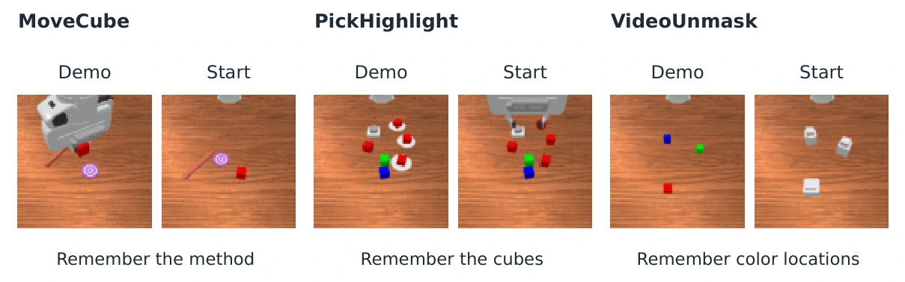

Decodable Cues, Unreliable Execution
Diagnosing TTT Memory in World–Action Models
A diagnostic study separating what robot memory stores, whether it changes behavior, and whether it improves task execution.

Approach
Fast-weight memory is evaluated with task-cue decoders and controlled right-, wrong-, and empty-memory interventions across three manipulation tasks.
Reported findings
On MoveCube, cues are decoded correctly in 60 of 60 inspected cases, yet task success is 11.7%. On PickHighlight, success is 12.1%, compared with 0% with empty memory. Stored information and reliable execution need separate evaluation.
Scope
An exploratory case study using inspected validation sets and one training seed per recipe. No memory-latency benchmark is reported.